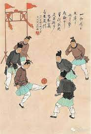

Football is a family of team sports that involve kicking a ball to score a goal. Unqualified, the word football normally means the form of football that is the most popular where the word is used. There are a number of references to traditional, ancient, or prehistoric ball games played in many different parts of the world. Contemporary codes of football can be traced back to the codification of these games at English public schools during the 19th century. The expansion and cultural influence of the British Empire allowed these rules of football to spread to areas of British influence outside the directly controlled Empire. By the end of the 19th century, distinct regional codes were already developing: Gaelic football, for example, deliberately incor porated the rules of local traditional football games in order to maintain their heritage. In 1888, The Football League was founded in England, becoming the first of many professional football competitions. During the 20th century, several of the various kinds of football grew to become some of the most popular team sports in the world.
the current famous football which is normally called as soccer in some countries use kicking codes where the ball is moved primarily with the feet, and where handling is strictly limited. Common rules among football include:
common skills in football include passing, tackling, evasion of tackles, catching and kicking. In most codes, there are rules restricting the movement of players offside, and players scoring a goal must put the ball under the crossbar and between the goalposts.
Ancient China  The Chinese competitive game cuju (蹴鞠) resembles modern association football (soccer), descriptions appear in a military manual dated to the second and third centuries BC. It existed during the Han dynasty and possibly the Qin dynasty, in the second and third centuries BC. The Japanese version of cuju is kemari (蹴鞠), and was developed during the Asuka period. This is known to have been played within the Japanese imperial court in Kyoto from about 600 AD. In kemari several people stand in a circle and kick a ball to each other, trying not to let the ball drop to the ground.